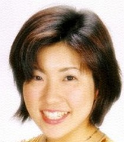

Miwa Matsumoto is a Japanese voice actress. She voiced Patamon in Digimon series and Chiharu Mihara in Cardcaptor Sakura series.
- Gender: Female
- Birthday: December 15, 1971
- Hometown: Fukuoka, Japan

| |
Miwa Matsumoto is a Japanese voice actress. She voiced Patamon in Digimon series and Chiharu Mihara in Cardcaptor Sakura series.
|
 |
|---|
 |
Chiharu Mihara |
|
Chiharu Mihara is a friend and classmate of Sakura Kinomoto. she is on the cheerleading squad with Sakura. Chiharu has good advice on love. She has feeling for Takashi Yamazaki. |